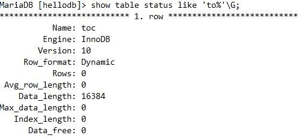

mysql引擎
[存储引擎比较]https://docs.oracle.com/cd/E17952_01/mysql-5.5-en/storage-engines.html
Mysql在V5.5之前默认存储引擎是MyISAM；在此之后默认存储引擎是InnoDB
MyISAM表
MyISAM是独立于操作系统的，这说明可以轻松地将其从Windows服务器移植到Linux服务器；
MyISAM特点
不支持事务
表级锁定
读写相互阻塞，写入不能读，读时不能写
只缓存索引
不支持外键约束
不支持聚簇索引 读取数据较快，占用资源较少 不支持MVCC（多版本并发控制机制）高并发
崩溃恢复性较差
MySQL5.5.5前默认的数据库引擎
MyISAM存储引擎特别适合以下几种情况下使用：
选择密集型表。MyISAM存储引擎在筛选大量数据时非常快，是它最突出的优点；
插入密集型表。MyISAM的并发插入特性允许同时选择、插入数据。
例如：MyISAM存储引擎非常适合管理邮件或Web服务器日志数据。
InnoDB表
特点：
行级锁
支持事务，适合处理大量短期事务
读写阻塞与事务隔离级别相关
可缓存数据和索引
支持聚簇索引
崩溃恢复性更好
支持MVCC高并发
从MySQL5.5后支持全文索引
从MySQL5.5.5开始为默认的数据库引擎
支持自动增加列AUTO_INCREMENT属性；
一般来说，如果需要事务支持，并且有较高的并发读取频率，InnoDB是很不错的选择。
其他存储引擎类型：
CSV：将CSV文件（以逗号分隔字段的文本文件）作为MySQL表文件。
MRG_MYISAM：此引擎也被称为MERGE存储引擎，如果一些myisam表的表结构完全相同，可以将这些MyISAM表合并成的一张MRG_MYISAM虚拟表。
BLACKHOLE：类似于/dev/null，不真正存储数据。
MEMORY：内存存储引擎，速度快，但是一旦断电数据将会丢失，支持hash索引，支持表级锁，常用于临时表。
PERFORMANCE_SCHEMA：从mysql5.5之后，多出了PERFORMANCE_SCHEMA数据库，PERFORMANCE_SCHEMA数据库中的表的表类型均为PERFORMANCE_SCHEMA，此数据库用于存储与数据库的性能相关的信息，用户无法创建使用这种存储引擎的表，但是dba可以通过PERFORMANCE_SCHEMA数据库中的信息进行性能分析，PERFORMANCE_SCHEMA数据库服务启动后此库中将不断的收集数据，mysql停机后此库中的表将不存在数据，类似于linux中的/proc。
FEDERATED: 用于访问其它远程MySQL服务器上表的存储引擎接口。
ARCHIVE: 见名知义，创建此种表类型的表往往用于存储归档信息、安全审计信息、历史信息等，创建数据仓库时，可能会用到此种表类型，使用archive表类型的表只支持select和insert操作，不能更新和删除操作，支持行级锁。
FEDERATED：利用federated引擎可将本地数据表映射至远程 MySQL 数据表，从而就可以解决应用程序中繁多的跨机器连接数据库问题，其实federated相当于一个访问其他远程mysql server的代理接口，它通过创建一个到远程mysql server的客户端连接，通过FEDERATED引擎创建的表只是在本地有表定义文件，数据文件则存在于远程数据库中。
查看引擎，表类型
show engines;
查看默认引擎
show variables like'storage_engine';
查看数据库所有表类型
show table status\G;
查看单张表类型
show table status like 'to%'\G;

查看创建表方法
修改存储引擎
已经存在数据的情况下，不要随意修改存储引擎，可能会导致原有表的特性消失
修改命令：
alter table ll engine=myisam;
修改默认存储引擎
首先停止mysql服务
修改my.cnf
[mysqld]
添加default-storage-engine=innodb
重启mysql服务
引擎数据文件
MyISAM
每当我们建立一个MyISAM引擎的表时，就会在本地磁盘上建立三个文件，
tb_demo.frm存储表定义；
tb_demo.MYD存储表数据；
tb_demo.MYI存储表索引。
InnoDB
所有InnoDB表的数据和索引放置于同一个表空间中 表空间文件：datadir定义的目录下
数据文件：ibddata1, ibddata2, ...
每个表单独使用一个表空间存储表的数据和索引
启用：innodb_file_per_table=ON
[参考]https://mariadb.com/kb/en/library/xtradbinnodb-serversystem-variables/#innodb_file_per_table
ON (>= MariaDB 5.5)
注意：如果在没有开启innodb_file_per_table前，并且已经存在某些使用innodb的表，那这些表，在开启后数据然在ibdta1中，新建的表才会单独使用以.ibd为后缀的表空间文件
本地磁盘上建立两个文件
ll.frm 表格式定义
ll.ibd 数据文件(存储数据和索引)